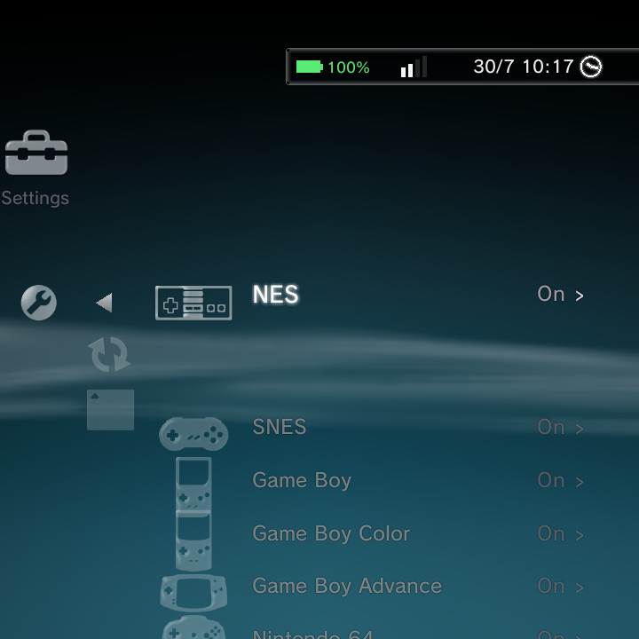
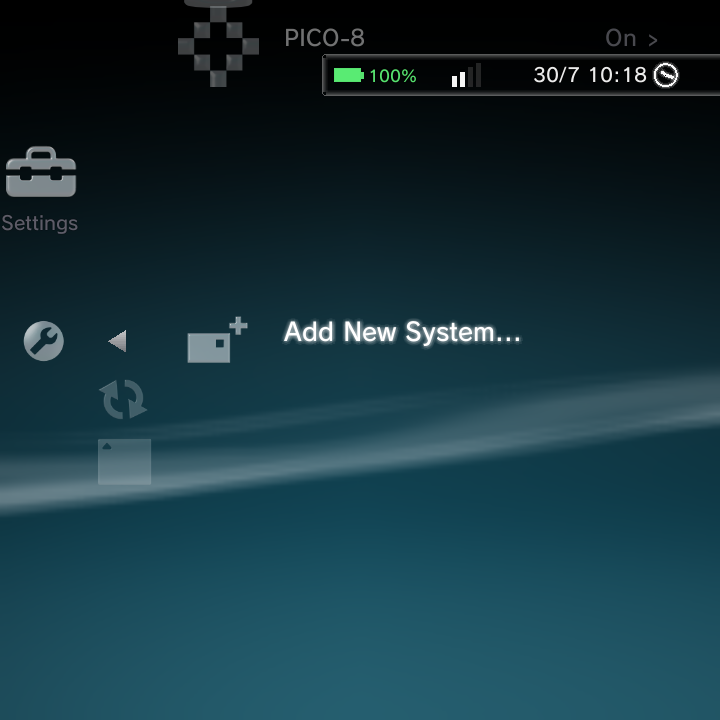
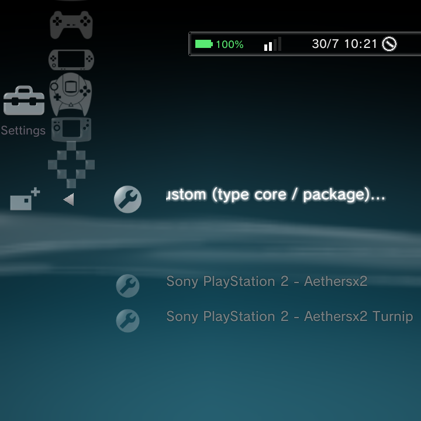
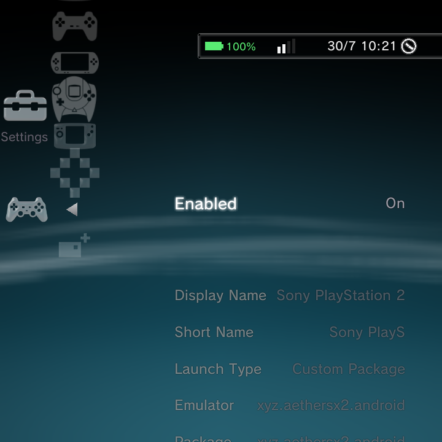
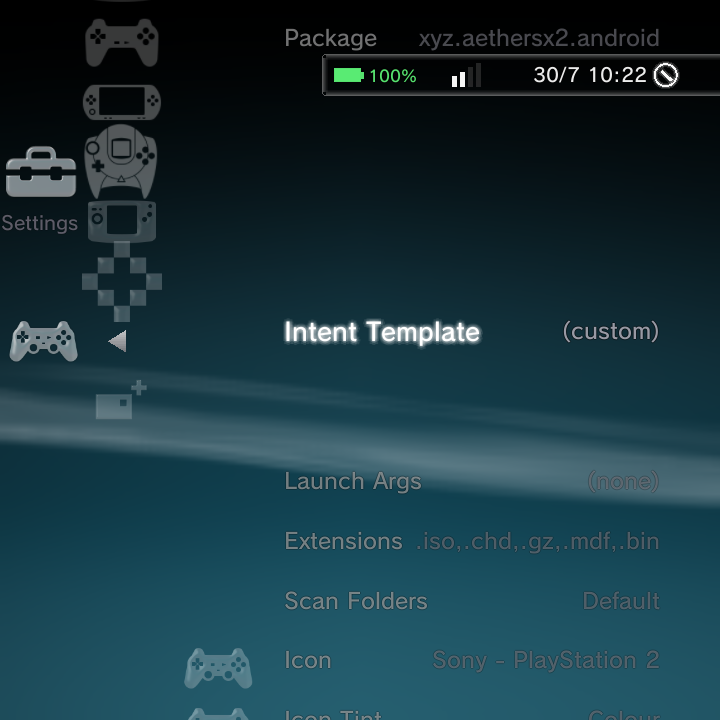
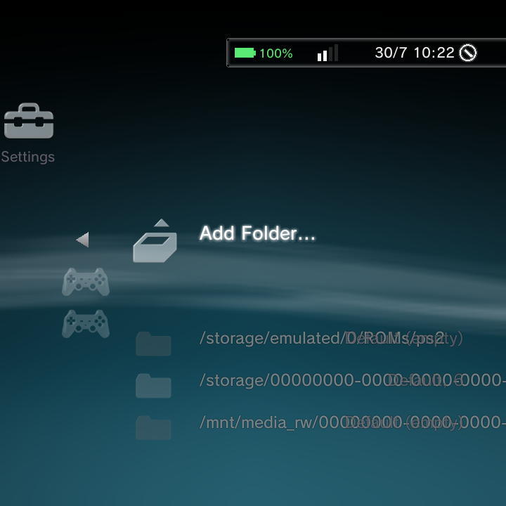
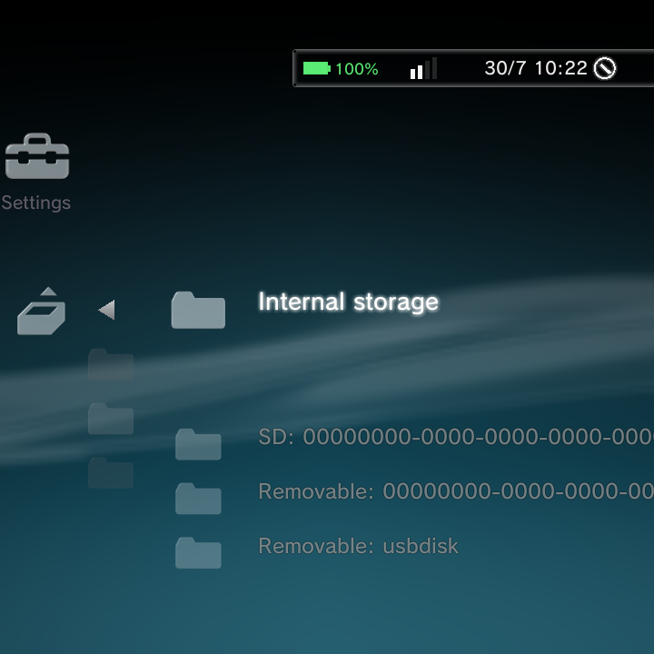

Nano ships knowing a lot of consoles, but you can add any system yourself. This page walks through it end to end using PlayStation 2 with the AetherSX2 emulator as the example. Follow the same steps for any standalone emulator or RetroArch core.
Nano ships with a built-in emulator catalog that already knows many standalone emulators (AetherSX2, NetherSX2, Dolphin, azahar, and more) plus every RetroArch core. That means adding a system is mostly picking from lists, and you rarely have to type anything technical by hand.
Step 1: Install the emulator app
Install the AetherSX2 app (package xyz.aethersx2.android) like any other app: side-load it, or copy the APK to the device and open it in the File Explorer.
Launch AetherSX2 once so it finishes its first-run setup and you can point it at your PS2 BIOS.
GammaOS Nano does not include any console BIOS files. AetherSX2 needs a PS2 BIOS, which you import inside the AetherSX2 app's own first-run setup. Games will not run without it. See Emulators for where each emulator keeps its BIOS.
Step 2: Open the Game Systems editor
Go to Settings > Game Settings > Game Systems. You get a list of every system with an On/Off toggle (reorder with L1 and R1).

Step 3: Choose Add New System
Scroll to the top of the list and choose Add New System....

Step 4: Pick the emulator
Choosing Add New System... opens the emulator picker, a searchable catalog. Type aethersx2 to filter, then choose Sony PlayStation 2 - Aethersx2.

Other PS2 targets live in the same catalog (NetherSX2 Turnip, ARMSX2, EmuCoreX, and RetroArch's Play core). Pick whichever emulator you actually installed.
Step 5: Let the editor auto-fill
As soon as you pick the emulator, Nano fills in the launch details for you:

| Field | Auto-filled value |
|---|---|
| Enabled | On |
| Display Name | Sony PlayStation 2 |
| Launch Type | Custom Package |
| Emulator | xyz.aethersx2.android |
Scroll down and you will see the rest of the launch details filled in too:

| Field | Auto-filled value |
|---|---|
| Package | xyz.aethersx2.android |
| Intent Template | custom (-n xyz.aethersx2.android/.EmulationActivity -a android.intent.action.MAIN -e bootPath {file.uri} --activity-clear-task --activity-clear-top) |
| Extensions | .iso, .chd, .gz, .mdf, .bin |
| Scan Folders | Default |
| Icon | Sony - PlayStation 2 |
The Emulator and Package fields both show the app you picked (xyz.aethersx2.android). That is expected: Emulator is the friendly identity you chose from the catalog, and Package is the exact Android package it launches.
You can leave the Intent Template exactly as it is. The {file.uri} placeholder is replaced with the game you selected each time you launch. Adjust the Extensions if your files use different types.
Step 6: Set your Scan Folders
Tell Nano where your PS2 games live. Select Scan Folders.

You can leave it on Default to use ROMs/ps2/, or choose Add Folder... to pick your own. The folder browser lets you pick internal storage, SD, or removable/USB, then drill down to your games folder.

Step 7: Add ROMs and rescan
Put your PS2 games in the folder you chose (for example /sdcard/ROMs/ps2/), then run Settings > Game Settings > Rescan Games.
The new PlayStation 2 system appears in the Game category with your games. Launching one hands off to AetherSX2 with the game's path.
Jumping back into the editor
Later, from the Game category, highlight the system row and press the Options button, then choose Manage Game System to jump straight back into this editor. No need to go through Settings again.
If a game does not launch
- Check the Package. The emulator app must actually be installed.
- Check the Extensions. They must include your game's file type.
- Check the emulator's own BIOS/import step is done (AetherSX2 needs a PS2 BIOS).
You can add unlimited custom systems this exact way, for any standalone app or RetroArch core.
Related pages
- Game Systems for editing an existing system.
- Emulators for cores, standalone apps, and BIOS files.
- Boxart & Metadata for cover art.